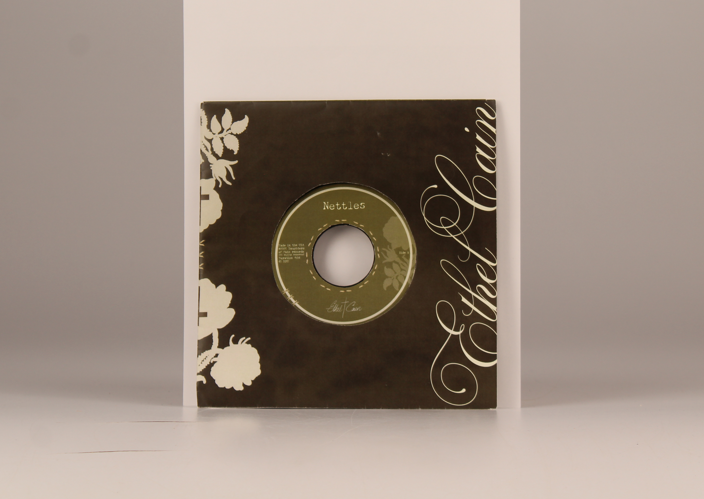

Ok Computer Album Redesign
This piece was created as a visual response to Radiohead's commentary on the progression of technology and its influence on humanity. The album translates the brimming fear that art and originality will soon be lost to generated machinery. Using Adobe Illustrator, Indesign, and hand-rendered elements, I explored my own emotional response to the elements of the album I deem more pressing than ever.
My work reflects themes of paranoia, suffocation, and duress—key aspects embedded in each song. Through translating them into a tangible representation that captures despair, and a desire to escape from the modern world, while communicating the key information of the album.
Alice Lee's Type II course at the University of Arkansas, Spring 2026 Spec limits—typography only
The building is layered in graffiti, local flyers, and artwork, creating an energetic and locally focused environment. Pulling from these cues, I used hand-rendered elements incorporated with Adobe Illustrator and Indesign to develop a menu that reflects their identity while advertising their products.
This design aims to blend the experience of the shop and capture the spirit of the brand, while enhancing the customer experience.

Using Adobe Illustrator, After Effects and Artivive, I developed a static piece and a complimentary motion graphic that interprets the song through a personal lens. The visual direction centers on gardenias and the lyric “This was all for you”. The flower serves as a reoccurring motif, symbolizing fragility and the promise of unconditional love, while also referencing side B, “Homecoming”, an unreleased track which continues exploring tragic devotion. This design represents my own cyclical experience with hope and its aftermath—capturing the painful duality of longing and the inevitability of disappointment—held together by the haunting realization that it was all for you.